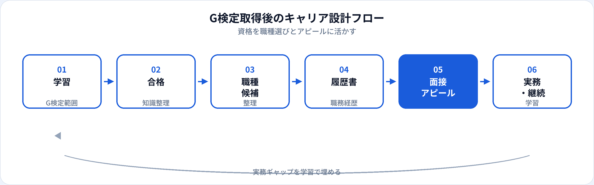

G検定（ジェネラリスト検定）は、AI・機械学習・ディープラーニングの基礎を幅広く問う資格です。合格は学習の区切りと共通言語の獲得として有効ですが、それだけで即戦力とみなされるわけではありません。本記事では、取得後に狙いやすい職種、履歴書の書き方、面接でのアピール、資格の限界を2026年6月時点の転職市場感覚で整理します。
G検定で証明できること
G検定は、AIの歴史・機械学習の基礎・ディープラーニングの概要・倫理・活用事例など、ジェネラリストとしてのリテラシーがある程度身についていることを示します。エンジニア採用では「用語を理解している」「実装面接で概念説明ができる」土台として評価されることがあります。
一方で、G検定はコーディング試験ではないため、Python実装力や本番運用経験は別途アピールが必要です。資格は「知識の地図を持っている」証明と捉え、実務スキルとセットで見せるのが現実的です。
試験対策はこちら
取得後に狙える職種
G検定は単独の職種資格ではなく、以下のようなポジションの学習・選考の土台になります。未経験の入口として現実的な順の目安も併記します。
| 職種 | G検定との相性 | 未経験の現実性 | 詳細ガイド |
|---|---|---|---|
| データアナリスト | データ・AI基礎の理解に有用 | ◎ 入口として現実的 | 記事へ |
| AIエンジニア | ML/DL概念の前提知識として直結 | ○ 実装ポートフォリオとセット | 記事へ |
| 機械学習エンジニア | 評価指標・学習の考え方に直結 | ○ 中級以上は実務重視 | 記事へ |
| データサイエンティスト | 統計・MLの土台として有用 | △ アナリスト経由が多い | 記事へ |
| MLOpsエンジニア | MLOps・運用の概念理解に有用 | △ インフラ経験とセット | 記事へ |
| AIプロダクトマネージャー | エンジニアとの共通言語づくり | △ PdM経験とセット | 記事へ |
職種選びに迷ったら、未経験者が最初に狙うべきAI職種5つも参照してください。
キャリア設計の流れ

合格後はいきなり大量応募より、狙う職種を1〜2に絞り、不足スキルをポートフォリオで補う流れが効率的です。G検定はその中間の「知識の棚卸しが完了した」マイルストーンとして位置づけます。
履歴書・職務経歴書の書き方
資格欄の記載例
「G検定（ジェネラリスト検定） 2026年6月取得」のように正式名称と年月を明記。取得見込みは「2026年8月取得見込み」とし、虚偽記載は避ける。
職務要約への活かし方
「G検定取得に伴い、機械学習パイプラインのPoCを個人開発で実装」など、資格と行動を一文で結ぶと説得力が増す。
スキル欄との整合
履歴書にPythonと書くなら、GitHubリンクや学習履歴と矛盾がないか確認。G検定は理論側、スキル欄は実践側と役割分担するとよい。
面接でのアピールポイント
面接官が聞きたいのは「資格を取っただけか、業務にどう活かせるか」です。次のように具体例で話せると評価されやすいです。
-
学習の動機と深さ
なぜG検定を選び、どの分野（例：過学習、評価指標、MLOps）を特に学んだか。
-
実務・ポートフォリオとの接続
学んだ概念を、個人開発・社内業務・Kaggleのどれに当てはめたか。
-
限界の理解
ハルシネーション、バイアス、データ品質など、G検定で学んだリスクを業務でどう扱うか。
-
今後の学習計画
入社後に伸ばすスキル（実装、クラウド、ドメイン）を職種に合わせて説明する。
資格だけでは足りない点
| G検定の強み | 別途必要になりやすいもの |
|---|---|
| AI/MLの基礎用語の体系的理解 | Python・SQLの実装力 |
| 転職時の「学習意欲」の証明 | GitHub・ポートフォリオ |
| 非エンジニアとの共通言語 | 本番運用・チーム開発経験 |
| 倫理・活用の基礎判断力 | ドメイン知識・業務実績 |
合格後の学習のつなげ方
狙う職種に応じた次の一手の例です。
-
データアナリストを目指す
SQLとBIを優先。G検定のデータ関連項目を復習しつつ、公開データでダッシュボードを1本作る。
-
AIエンジニアを目指す
scikit-learnで学習〜評価をスクリプト化。G検定の評価指標・過学習の知識をREADMEに反映する。
-
生成AI領域も視野に入れる
業務活用なら生成AIパスポート、合格後の学習は取得後のロードマップ、実装なら生成AIエンジニアのガイドを参照。
よくある質問
G検定だけでAIエンジニアになれますか？
基礎知識の証明としては有用ですが、実装ポートフォリオとセットがほぼ必須です。AIエンジニアの解説も参照してください。
G検定は履歴書のどこに書く？
「資格・免許」欄に正式名称と取得年月を記載します。取得見込みは年月を明記し、面接で説明できるようにします。
G検定と生成AIパスポートはどちらを先に？
エンジニア・データ職ならG検定が先、業務での生成AI活用なら生成AIパスポートが先、という整理が一般的です。
社内のAI推進にG検定は使える？
社内研修の前提知識や、推進リーダーのリテラシー証明として使われることがあります。ただし社内評価は資格より成果が重視されることも多いです。
取得からどのくらいで転職活動すべき？
合格直後にいきなり応募するより、1〜2か月で職種に合ったポートフォリオを1つ完成させてからの方が通過率は上がりやすいです。